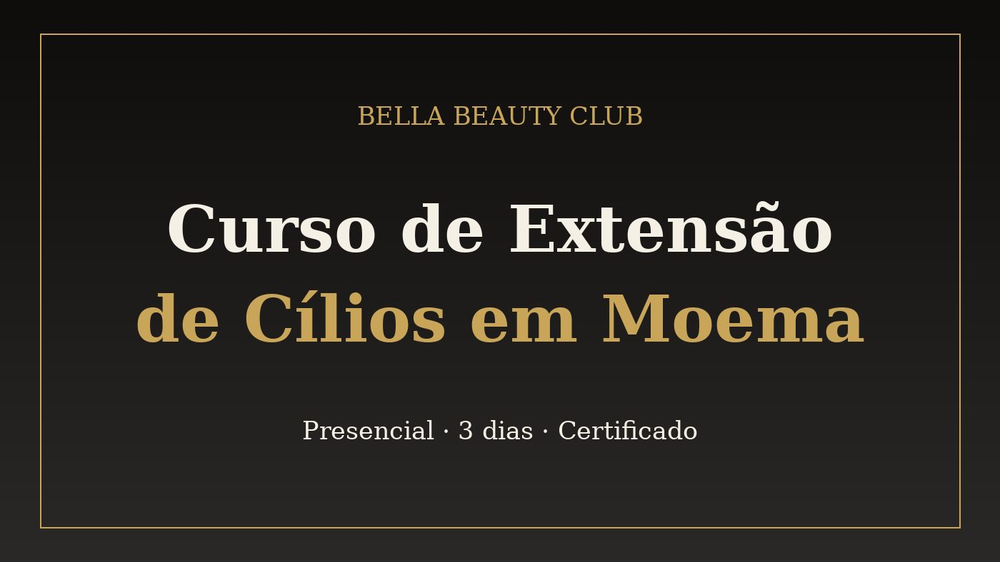

Curso de Extensão de Cílios em Moema: presencial, 3 dias e prática em modelo real

O Bella Beauty Club abre a unidade Moema para o curso presencial de extensão de cílios: 3 dias de aulas, prática em modelo real, kit e certificado, na Av. Rouxinol, 1041 - Conj. 407-A.
O que você vai aprender
- Fio a fio: aplicação clássica, um fio sintético por cílio natural
- Volume brasileiro, egípcio, americano e russo
- Efeito molhado, híbrido e mega volume
- Mapping e curvatura: desenho do olhar e escolha da curvatura
- Isolamento correto dos cílios naturais
- Biossegurança no atendimento
- Prática em modelo real, acompanhada em sala
- Suporte por WhatsApp após o curso
Técnicas ensinadas
Vantagens do curso presencial em Moema
Prática em modelo real
Você aplica as técnicas em modelo real durante o curso, com acompanhamento em sala.Tudo incluso
Material didático, kit e certificado fazem parte do valor do curso.Curso em 3 dias
Conteúdo concentrado em 3 dias presenciais na unidade Moema.Suporte por WhatsApp
Canal direto para tirar dúvidas: (11) 95241-2499.Nota 5,0 no Google
Avaliação 5,0 baseada em 52 avaliações.Investimento e local
Valor: R$ 1.799 · até 10x no cartão · 5% off à vista no Pix
Duração: 3 dias · presencial
Endereço: Av. Rouxinol, 1041 - Conj. 407-A, Moema, São Paulo - SP, 04516-001
WhatsApp: (11) 95241-2499
Garantir minha vaga no WhatsAppPerguntas frequentes
Quanto custa o curso de extensão de cílios em Moema?
O curso de extensão de cílios do Bella Beauty Club em Moema custa R$ 1.799, em até 10x no cartão. À vista no Pix há 5% de desconto, o que resulta em R$ 1.709,05.
Quanto tempo dura o curso de extensão de cílios?
O curso tem duração de 3 dias, com aulas presenciais na unidade Moema.
O curso de extensão de cílios é presencial?
Sim. As aulas acontecem presencialmente na unidade Moema do Bella Beauty Club, na Av. Rouxinol, 1041 - Conj. 407-A.
Onde fazer curso de extensão de cílios em Moema, SP?
No Bella Beauty Club, unidade Moema: Av. Rouxinol, 1041 - Conj. 407-A, Moema, São Paulo - SP, CEP 04516-001.
O que está incluso no curso?
Material didático, kit, certificado, prática em modelo real e suporte por WhatsApp.
Quais técnicas de extensão de cílios são ensinadas?
Fio a fio, volume brasileiro, egípcio, americano, efeito molhado, volume russo, híbrido, mega volume, mapping/curvatura, isolamento e biossegurança.
O curso dá certificado?
Sim. O certificado de conclusão está incluso no valor do curso. Trata-se de curso livre não-profissionalizante.
Tem prática em modelo real?
Sim. A prática em modelo real faz parte do curso, junto com aulas práticas em turma reduzida.
Aviso: curso livre não-profissionalizante. O certificado atesta a conclusão do curso e não substitui formação técnica regulamentada.